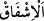

sonsuz ilmiyle onları kuşattığı için bilir. Meleklerin bütün hâlleri Allâh’ın gözetimi
altındadır. O’nun emri olmadan bir söz sarf etmez ve davranışta bulunmazlar. Bu ifâde,
önceki kısmın sebebini açıklama, sonraki kısım için de bir hazırlıktır.
“Allah rızâsına ulaşmış olanlardan” Allah Teâlâ’nın mehâbetinden, O’ndan
çekinerek îman ehlinden kendisine şefâat etmesine razı olduğundan “başkasına şefâat
etmezler.” Şefâat; bir kimsenin yardım ederek veya yardım isteyerek bir başkasına
katılması, yanaşmasıdır. Çoğunlukla mertebece üstte olanın altta olana yaklaşmasını
anlatmak üzere kullanılır. Nitekim kıyâmetteki şefâat de bu kabildendir.
İbn Abbas (r.anhümâ) der ki: (Melekler) “Lâ ilâhe illallah” diyenlerden başkasına
şefâat etmezler.”
Şu halde bu âyette büyük günah işleyenlere şefâat edilmeyeceği konusunda Mûtezile
için bir delil yoktur.
el-Es’iletü’l-mukhime’de şöyle der: Eğer “Bu âyet, büyük günah işleyenlere şefâat
olunmayacağına delildir. Çünkü Allah onlara şefâat edilmesinden razı değildir.”
denirse, bunun cevabı şöyledir: Her ne kadar kötü fiilinden hoşnud olmasa da Allah,
kendisini tanıması (ma‘rifeti) ve şehâdeti sebebiyle asî (günahkâr mü’min) kulundan da
râzı olur. Çünkü o bazı yönlerden O’na âsî olmuşsa da, başka yönlerden de O’na itaat
etmiştir. Şu halde kendisine itaat ettiği yönlerden O’ndan râzıdır. Bu yüzden İbn Abbas
(r.anhümâ) “Allâh’ın kendilerinden râzı oldukları Allah’tan başka ilah olmadığına
şâhidlik eden kimselerdir.” demiştir.
Mesnevî’de der ki:
Peygamber der ki kıyâmet gününde
Suçluları gözyaşı içinde bırakır mıyım hiç?
Âsîleri ağır işkenceden kurtarmak için
Onlar için can u gönülden şefâatçiyim
Âsîleri ve büyük günah sahiplerini
Ahde vefasızlığın azabından ciddiyetle kurtarırım
Ümmetimin sâlihleri hüsran gününde
Benim şefâatime zaten ihtiyaç duymazlar
Hattâ onlar kendileri şefâatçi olurlar
Onların sözleri buyruk yerine geçer
Bununla birlikte “Onlar, Allah korkusundan” Allah Teâlâ’dan korktuklarından
dolayı, O’nun mehâbet ve azametinden “titrerler!” korkarlar.
“
(titremek)” korku ile karışık ihtimamdır. Çünkü müşfik, kendisine şefkat ettiği
kimseyi sever ve onun başına bir şey gelmesinden korkar. Nitekim el-Müfredât’ta böyle
geçmektedir.
Şeyhzâde der ki: “Haşyet” ve “işfâk” mânâ bakımından birbirine yakındır.
Aralarındaki fark şudur: “Haşyet”te kendisinden korkulana bakılır, dikkat edilir. Bu da